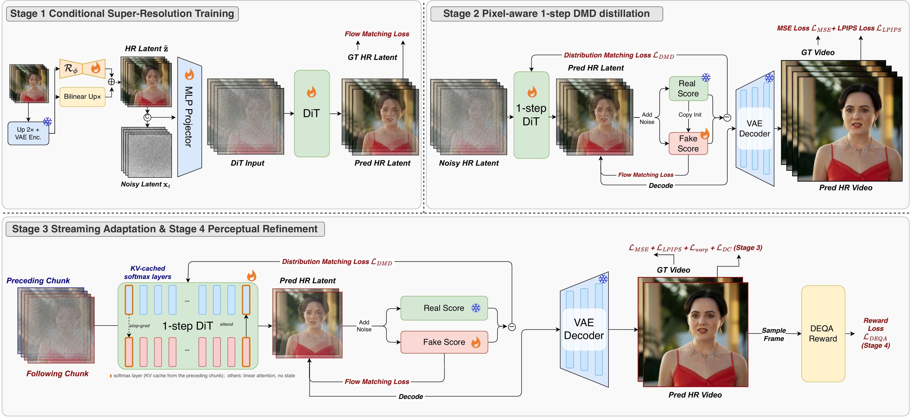

1Peking University
×4 super-resolution from 320×176 inputs to 1280×704. The inputs are lightly degraded (slight blur, ×4 downscaling, mild noise and H.264 compression). Drag across any clip to compare; press to view it large and zoom into the details.
Half-minute clips restored end to end by the deployed model. LinearVSR processes the video as a stream of 33-frame chunks and carries only the softmax-attention KV-cache of the previous chunk, so memory and per-chunk latency stay constant however long the video is — and no seams appear at chunk boundaries. Drag across any clip to compare; press to watch it large.
A live 30 fps stream is processed chunk by chunk. At 2K, LinearVSR restores a 33-frame chunk in 693 ms, faster than the 1.07 s it takes the next 32 frames to arrive, so playback never stalls after the first chunk. FlashVSR-Tiny needs 3.7 s per chunk and keeps falling behind. Both panels show each model's real output on the same input; timings are the measured 2K throughputs (one H200).
One denoising step, a linear-attention DiT, a cascaded latent-upsampling encoder, a pruned decoder adapted to predicted latents, and fused kernels across the whole pipeline. Measured on a single NVIDIA H200, BF16, 33-frame chunks.
With one-step distillation the VAE encoder and decoder cost as much as the DiT, so every module has to be fast. LinearVSR co-designs all of them: a cascaded latent-upsampling encoder, a linear-attention DiT trained in four stages for one-step streaming, a pruned decoder adapted to predicted latents, and fused kernels across the whole pipeline.

Recent one-step diffusion models have advanced video super-resolution (VSR) quality, but real-time streaming at beyond-HD resolutions remains out of reach: even with single-step inference, the VAE encoder, decoder, and high-resolution latent processing dominate end-to-end latency. We present LinearVSR, to our knowledge the first VSR system built on a linear-attention diffusion transformer, achieving real-time beyond-HD super-resolution through algorithm–system co-design.
On the algorithm side, a four-stage training pipeline progressively enables conditional restoration, one-step inference, streaming execution with cross-chunk KV-cache state transfer, and perceptual refinement. A cascaded latent-upsampling encoder and a structurally pruned decoder with predicted-latent adaptation jointly reduce the VAE overhead. On the system side, end-to-end kernel fusion and memory-aware tensor layouts further lower latency across the entire pipeline. LinearVSR reaches 48 FPS at 1408×2560 and 17 FPS at 2176×3840 on a single H200 GPU, making it the fastest diffusion-based VSR method to date, with competitive restoration quality on standard VSR benchmarks.
End-to-end latency at 2K (1408×2560, 33 frames, single H200, BF16), model forward passes only.
×4 VSR on synthetic and real-world benchmarks (paper Tab. 1). best second third